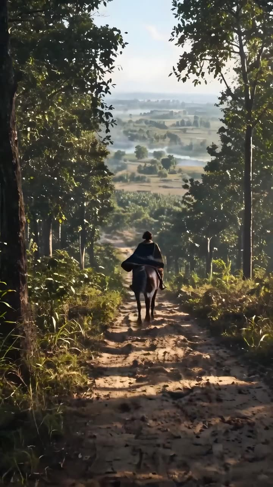

Kerajaan ini kami buat.
Kampanyemu berikutnya, setara TVC tanpa syuting berbulan-bulan.
Dari Jaka Tingkir Saga, serial orisinal kami.
Karya terpilih
Film, iklan, dan kampanye yang sudah tayang.
Semua karyaYang kami garap
- Iklan TV dan digital
- Kampanye lembaga dan brand
- Serial dan film orisinal
- Karakter 3D dan foto AI
Untuk agensi dan rumah produksi, kami bekerja di belakang nama kalian. Untuk agensi